在以撒的结合中,种子决定了每一件道具,敌人,房间和每一层的布局。在玩种子时，你无法正常解锁任何游戏里的秘密。但你可以分享地图种子给你的朋友，，然后游玩同一地图。
Rebirth的种子组合有超过40亿个种,其中有部分预先分配的种子对游戏模式有特殊的改动。 这个页面整理了所有开发人员预先添加秘密种子和相应的效果,。
Note: 所有的种子都是8位字符，因为I,O,U和V太容易认错，所以不会出现这是个字符。
| 这里是神奇的种子 | 描述 / 效果 | 动图 |
| 1MNO BODY |
你的人物是完全隐形的，但是你仍然可以通过身上的效果定位到自己。 | 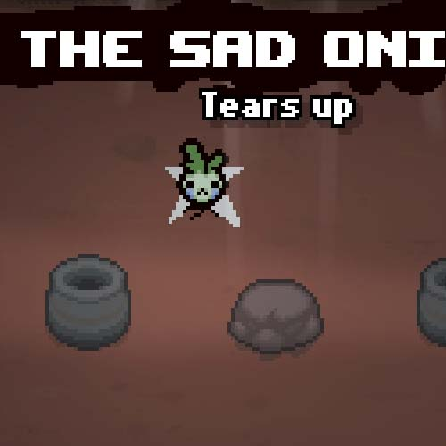 |
| 30M1 N1TS |
你有30分钟时间通关这一局游戏，经过29分45秒后定时器开始计时，30分钟以后，每秒人物都会扣血。 | (没有图片) |
| ALLE GR0 |
音乐全程加速播放 | (没有图片) |
| ANDA NTE |
音乐全程减速播放 | (没有图片) |
| BASE MENT |
无止境的游戏，每一层都是第一层，由于道具生成的机制，在道具池用尽之后，所有的道具都将是早餐（牛俗称奶）。 | 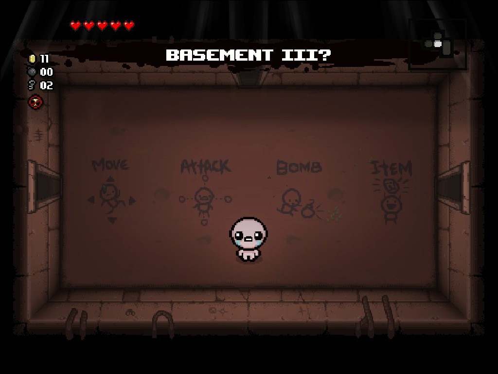 |
| BL1N DEYE |
把所有的敌人变成隐形。 | 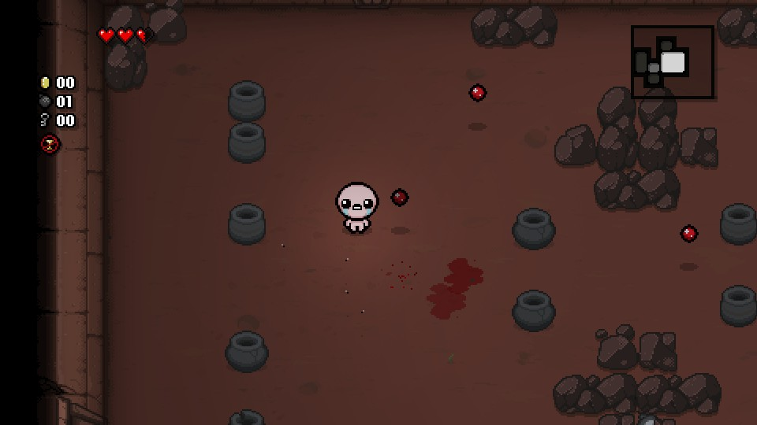 |
| BL00 00DY |
增加当敌人被杀死时产生的血块，满地大姨妈。 | 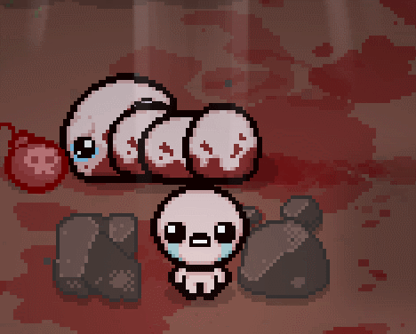 |
| B00B T00B |
老电视的显示效果 | 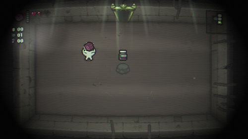 |
| BRTL B0NS |
一碰就死 | 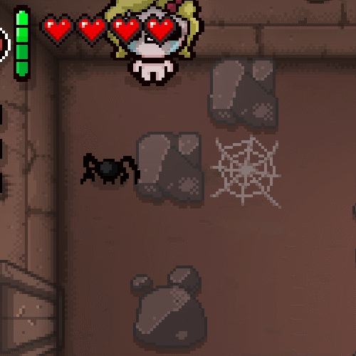 |
| BRWN SNKE |
随地大便 | 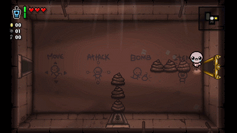 |
| CAM0 F0ES |
掉落物与地板颜色相近，难以被看到。 | 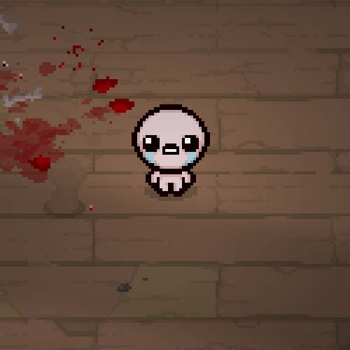 |
| CAMO K1DD |
角色变颜色与地板颜色相近（半透明） | 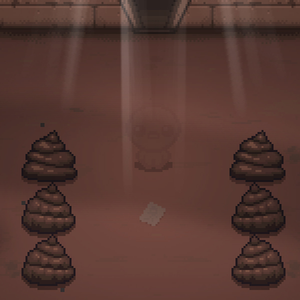 |
| CHAM P1ON |
所有怪物都变成精英怪 | 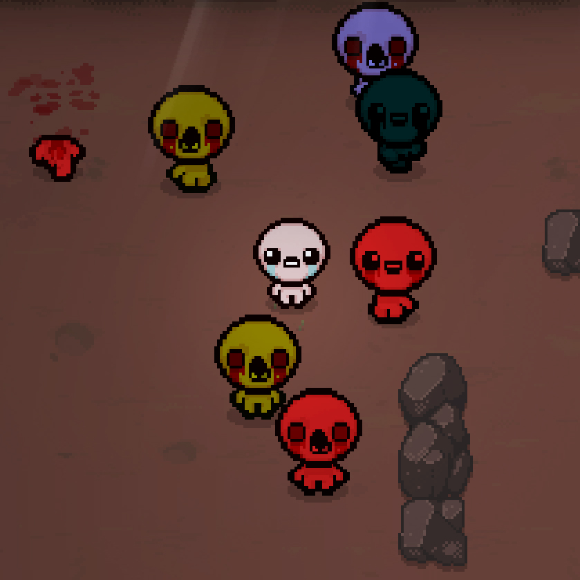 |
| CHRS TMAS |
带上圣诞帽! (与'H0H0 H0H0'效果相同 - 增加于 v1.04) | 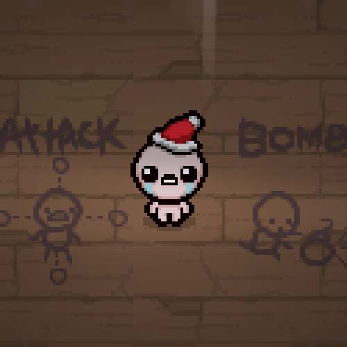 |
| C0CK FGHT |
所有敌人都被魅惑 | 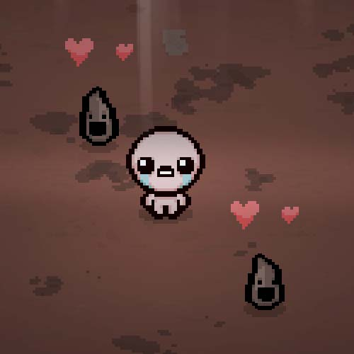 |
| C0ME BACK |
当你离开房间再回来时，所有敌人重生。 | (没有图片) |
| C0NF ETT1 |
所有敌人都被赋予眩晕状态 | 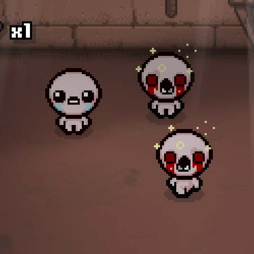 |
| C0PY C0PY |
每一层给予未知诅咒curse of the unknown | (没有图片) |
| D0NT ST0P |
角色不动就会受到伤害 | (没有图片) |
| DRAW KCAB |
交换移动和发射眼泪的按键 | (没有图片) |
| DYSL EX1C |
重新安排游戏中的文本 | 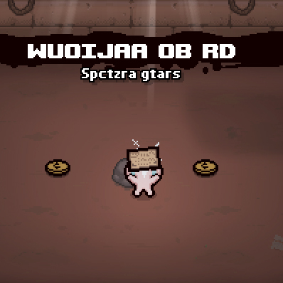 |
| FACE D0WN |
所有的塔罗牌都是背面朝上，无法知晓效果。 | (没有图片) |
| FART SNDS |
所有音效变成放屁声 | (没有图片) |
| FEAR M1NT |
所有的敌人都被恐惧。 | 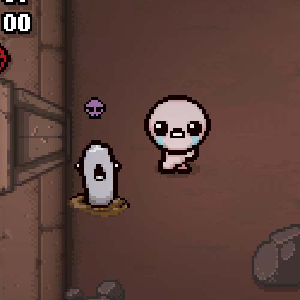 |
| FRA1 DN0T |
每隔几秒所有怪物就会被恐惧一次 | 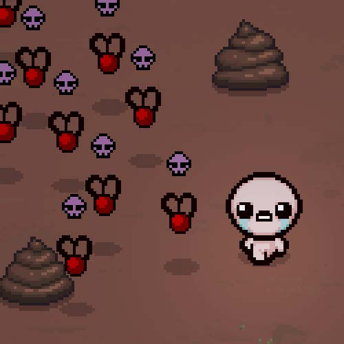 |
| FREE 2PAY |
开局给你69个硬币，捡起任何的掉落物和道具都需要支部硬币。 | 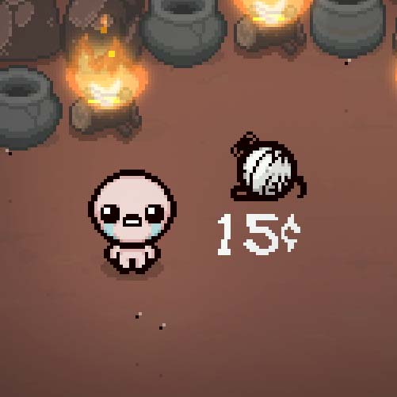 |
| HARD HARD |
所有的伤害都变为1颗心 | (没有图片) |
| HART BEAT |
生命值越低，音乐越慢。 | (没有图片) |
| H0H0 H0H0 |
圣诞帽获得! (和 'CHRS TMAS'效果相同 - 添加于 v1.04) | |
| KAPP A |
把角色变成灰色（与twitch上的kappa表情） | 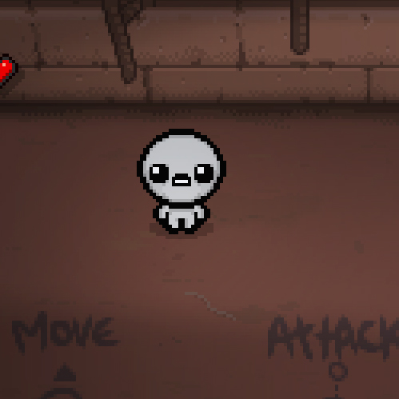 |
| KEEP AWAY |
掉落物随角色一起移动 | 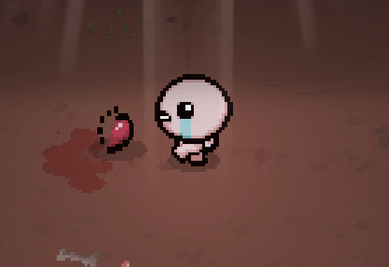 |
| KEEP TRAK |
移除所有的UI | (没有图片) |
| K1DS M0DE |
给予2P的宝宝无敌效果 | (没有图片) |
| LARG HET0 |
减速播放音乐 (比 ANDANTE 更慢). | (没有图片) |
| MED1 C1NE |
所有的药丸名称和描述全被替换为??? | 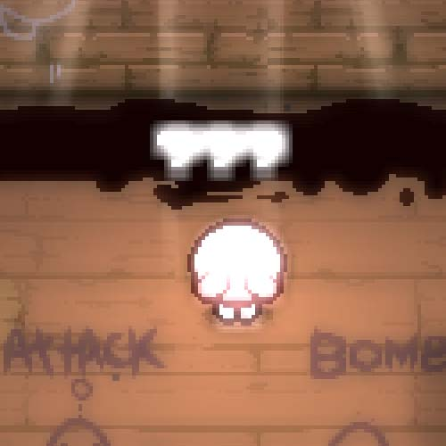 |
| PAC1 F1SM |
所有的敌人和BOSS无法被杀死，所有的门都是开着的，BOSS的生命会自己慢慢减少。 | (没有图片) |
| PRES T0 |
加速播放音乐(比 ALLE GR0 更快). | (没有图片) |
| PTCH BLCK |
把角色变成一个黑色的阴影。 | 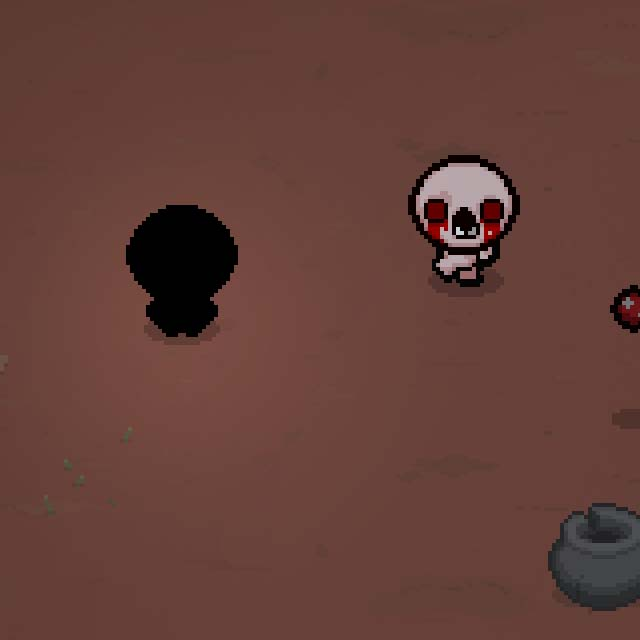 |
| SLOW 4ME2 |
音乐的速度取决于角色的移动速度 | (没有图片) |
| TEAR GL0W |
眼泪发光 (不引人注意，除非你有黑暗的诅咒Curse of Darkness). | 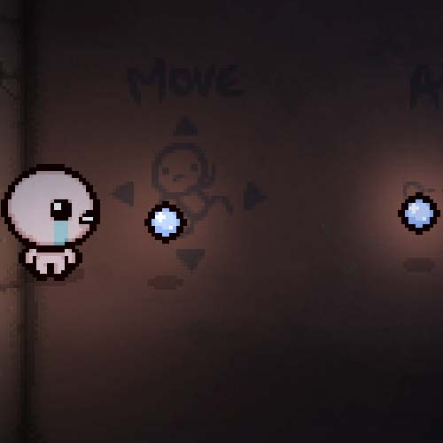 |
| THEB LANK |
角色没有脸 | 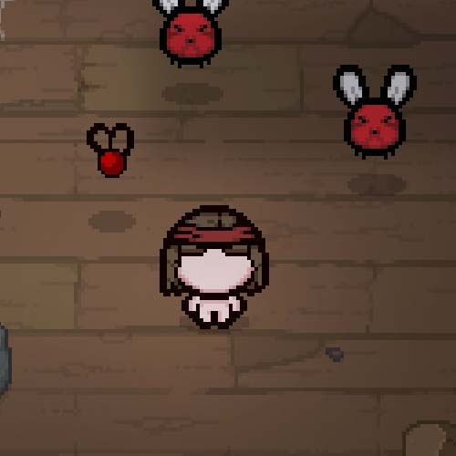 |
| THEG H0ST |
每隔45秒将会听到倒计时，再过5秒后角色受到伤害。 | (没有图片) |
| T1NY D0ME |
小头爸爸（误 | 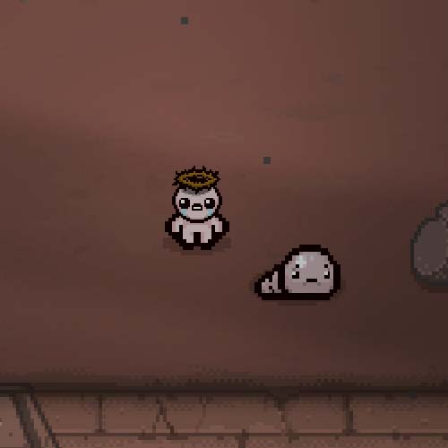 |
| T0PH EAVY |
大头儿子（误 | 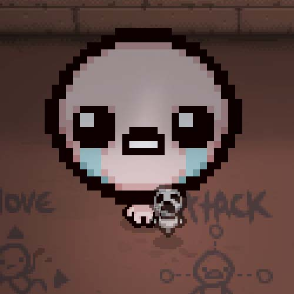 |
| WH0A WHAT |
角色、敌人、掉落物和道具都变成半透明(和CAM0 K1DD / CAM0 F0ES 相似). | 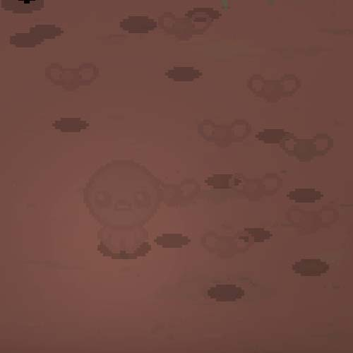 |